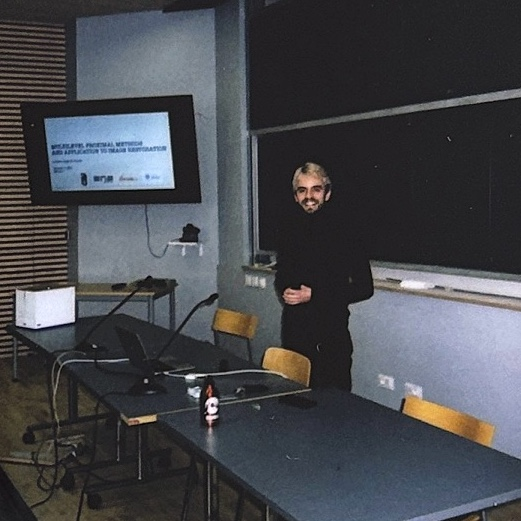
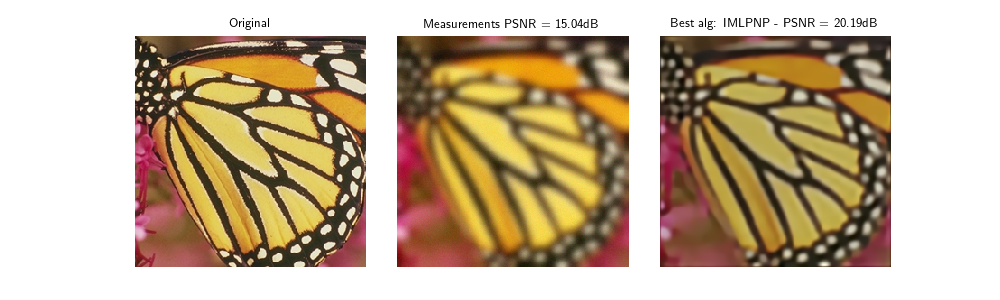
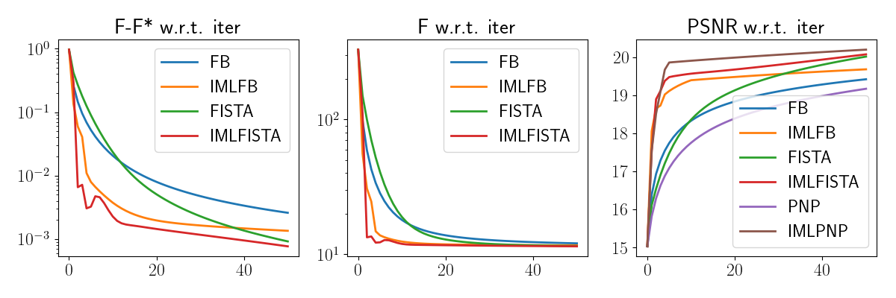
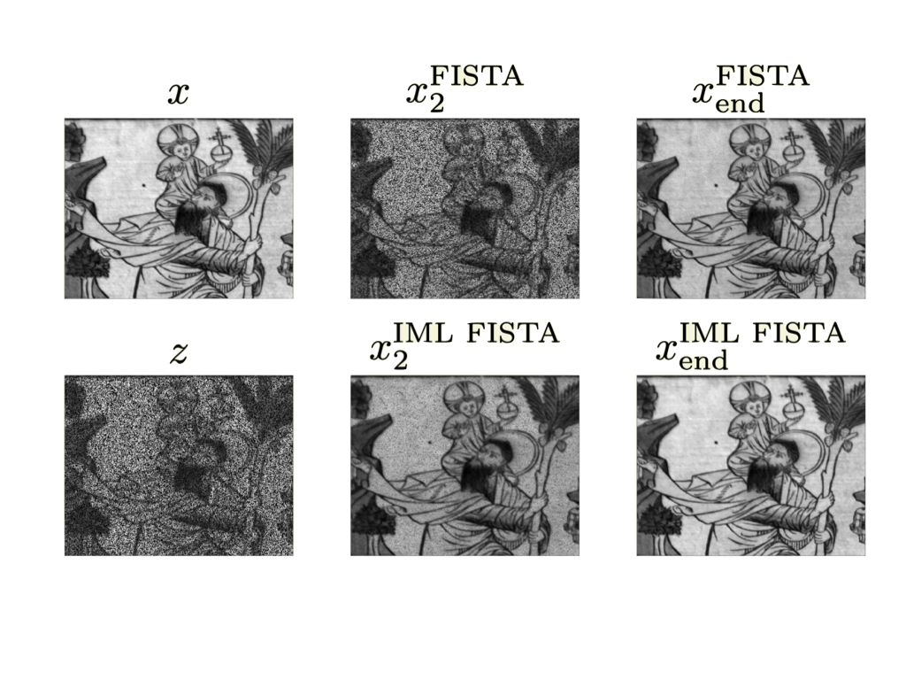
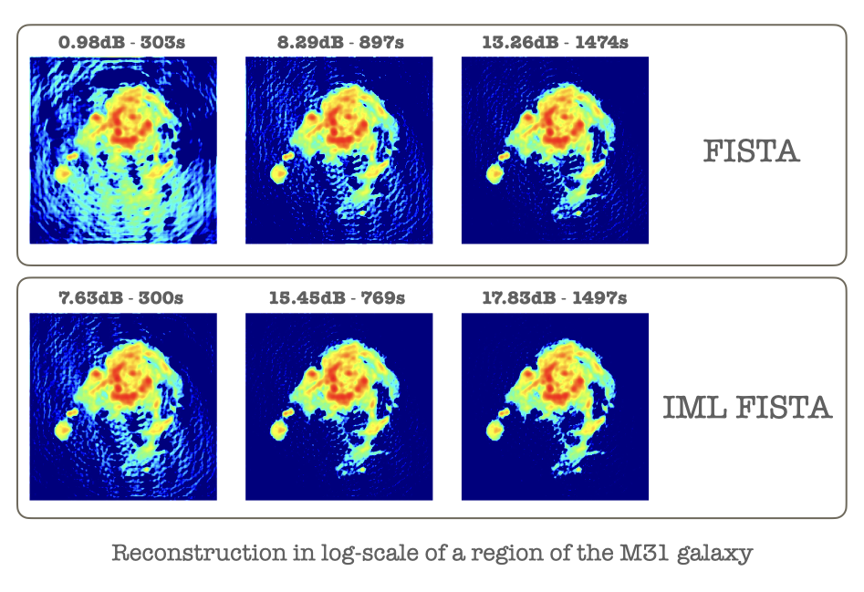

|
Guillaume Lauga I'm a postdoctoral researcher at ENS Lyon, where I defended my thesis in December 2024, supervised by Paulo Gonçalves, Elisa Riccietti and Nelly Pustelnik. I was a member of the Inria OCKHAM team. Starting from July 2025, I will be at Université Côte d'Azur with Samuel Vaiter. During my PhD, I worked on multilevel optimization methods for proximal based algorithms, with applications to image restoration problems. |
 |
{kind=link}
ResearchI'm interested in optimization for imaging applications. Since the start of my PhD I investigate the convergence of proximal algorithms tailored for large-scale problems. Such algorithms can take the form of multilevel algorithms but also block-coordinate descent algorithms, which are often used in imaging applications. I also try to apply these algorithms to as many challenging imaging problems I can. |


|
Python code for IML FISTA, compatible with DeepInverse
Repository containing a Python implementation of three multilevel algorithms: IML FB, IML FISTA and IML PNP to be compared to their single level counterparts. The code is compatible with the DeepInverse package, which allows to easily change the imaging application.   |
|

|
IML FISTA: A Multilevel Framework for Inexact and Inertial Forward-Backward. Application to Image Restoration
Guillaume Lauga, Elisa Riccietti, Nelly Pustelnik, Paulo Gonçalves SIAM Journal on Imaging Sciences, 2024 Matlab code / arXiv / HAL IML FISTA: An Inexact Multilevel FISTA. Optimal convergence guarantees on non-smooth convex optimization problems and ability to handle inexact computation of the proximity operator. Some applications to restoration of color and hyperspectral images. |
|

|
A multilevel framework for accelerating uSARA in radio-interferometric imaging
Guillaume Lauga, Audrey Repetti, Elisa Riccietti, Nelly Pustelnik, Paulo Gonçalves, Yves Wiaux EUSIPCO, 2024 (Poster) BASP Group project page / arXiv / HAL Application of IML FISTA to solve radio-interferometric imaging problems. Hierarchy of approximations built in the observation space rather than in the parameter space. |
|
Website source code from here. |